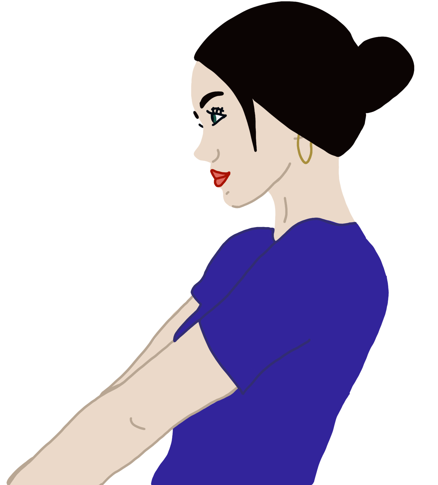

Defne Deda
"deff-neh deh-dah"
determined, dedicated, dependable.
I’m a senior at Northwestern University, majoring in Computer Science with a minor in Psychology and pursuing a Segal Design Certificate. I’m passionate about merging creativity, technology, and accessibility to craft experiences that resonate with audiences.
One way my passion for creation manifests itself is through Mayfest Productions. I started in promotions, rose to Lead Brand Designer, and I now lead the organization, a team of 100+ students who organize the nation’s largest student-run music festival, overseeing everything from brand design to production.
Outside of work, I explore creative outlets like digital art and painting, always seeking challenges that fuel my passion for design, entertainment, and problem-solving.